Table of Contents
Wherein linear attention is found to be an SVM, but nonlinear attention is not.
1 Introduction
- Understanding how transformers work is kind of important. But because they're complex, we don't know much!
- We could go data first, and try to understand the statistics of the
data they work well on. [1] goes architecture first,
and characterizes the optimization landscape in a data-independent
way. In its own words, it answers the questions:
- Can we characterize the optimization landscape and implicit bias of transformers?
- How does the attention layer select and compose tokens when trained with GD?
- The answer to "can we" is a relatively comprehensive "yes", and to "how" is "a single layer transformer trained by gradient descent (GD) solves a max-margin SVM problem which isolates locally optimal tokens".
- For intuition, this is similar to the fact that logistic loss, trained with GD, converges to a max-margin SVM on separable data sets. Instead of logistic loss, we have a similar looking softmax.
2 Attention heads
- Maria gave us a nice intro to transformers earlier this year, so I'll just briefly recapitulate what we need.
- Imagine that our data
lives in some \(d\)-dimensional feature
space (for instance, with an autoencoder like
word2vec). For two sequences of \(T\) data points, \(\mathbf{X}, \mathbf{Z} \in \mathbb{R}^{T \times d}\), we will be interested in how \(\mathbf{Z}\) "attends to" \(\mathbf{X}\). Our setup is called an attention head. - We model this with two new embeddings, designed to capture attentionally relevant features. More precisely, define key and query matrices \(\mathbf{K}, \mathbf{Q} \in \mathbb{R}^{d\times m}\), where \(m\) is a rank constraint whose significance will become clear later.
- Multiplying \(\mathbf{X}\) by the key matrix gives a sequence of lookup keys \(\mathbf{X}\mathbf{K} = \mathbf{k}\), and multiplying \(\mathbf{Z}\) by the query matrix gives a sequence of queries \(\mathbf{Z}\mathbf{Q} = \mathbf{q}\).

- The "raw" attention that query \(q_i\) pays to key \(k_j\) is \(q_i \cdot k_j\). We collect all these dot products in a matrix \(\mathbf{q}\mathbf{k}^\top\). We normalize and filter out the most relevant keys by applying the softmax function \(\mathtt{S}\) to each query: \[ \mathtt{S}(q_i\mathbf{k}^\top) = \left[\frac{e^{q_i\cdot k_j}}{\sum_j e^{{q_i\cdot k_j}}}\right]. \] When applied to the matrix, we implicitly mean query-wise. This gives a smoothed version of of the argmax function, as we picture below:

- Each row of the softmax matrix is a probability distribution over keys. Thus, multiplying by \(\mathbf{X}\) returns a weighted combination of keys for each query. Usually this is embedded once more via a value matrix, and run through a multi-layer perceptron (MLP) before being collapsed into a scalar.
- We're going to make some simplifications at this point. First, we'll consider the dynamics of a single query \(z\). Second, we'll collapse the details of the value matrix and the MLP into a prediction head \(h: \mathbb{R}^d \to \mathbb{R}\), applied to the output vector, \[ h(a), \quad a = \mathtt{S}(z\mathbf{Q}\mathbf{K}^\top \mathbf{X}^\top)\mathbf{X}. \] In words, we get a softmax attention-weighted combination of vectors from \(\mathbf{X}\), and map this to a number.
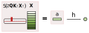
- I'll mostly focus on a linear prediction head, which simply takes the dot product of the output vector \(s \in \mathbb{R}^d\) with some value vector \(v \in \mathbb{R}^d\), \(h(a) = a \cdot v\).
- This number can be positive or negative, a fact we can use to turn our prediction head into a binary classifier. Formally, consider a set of \(n\) data points, \((\mathbf{X}_i, z_i, Y_i)_{i=1}^n\), where \(Y_i = \pm 1\). The empirical risk for \(\mathbf{K}\) and \(\mathbf{Q}\) is \[ \mathcal{L}(\mathbf{K}, \mathbf{Q}) = \frac{1}{n}\sum_{i=1}^n \ell \left(Y_i \cdot h(a_i)\right), \quad a_i = \mathtt{S}(z_i\mathbf{Q}\mathbf{K}^\top \mathbf{X}_i^\top)\mathbf{X}_i, \tag{1}\label{loss-QK} \] for some decreasing loss function \(\ell\). Since \(\mathbf{K}\) and \(\mathbf{Q}\) always appear in the combination \(\mathbf{W} = \mathbf{Q}\mathbf{K}^\top\), we can train this weight matrix instead: \[ \mathcal{L}(\mathbf{W}) = \frac{1}{n}\sum_{i=1}^n \ell \left(Y_i \cdot h(a_i)\right), \quad a_i=\mathtt{S}(z_i\mathbf{W}\mathbf{X}^\top)\mathbf{X}_i. \tag{2}\label{loss-W} \] These aren't equivalent because factorization forces \(\mathbf{W}\) to have rank \(m\).
3 Margins and paths
3.1 Formulating SVMs
- Our goal will be to characterize the attention head in terms of an SVM problem for separating tokens. The goal: to max-margin sort the best from the rest.
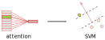
- To formulate this SVM, consider a data point \((\mathbf{X}_i, z_i, Y_i)\). We define the score of each token in the sequence \(x_{it} \in \mathbf{X}_i\) as \[ \gamma_{it} = Y_i h(x_{it}) = Y_i (x_{it} \cdot v). \tag{3} \label{score} \] An optimal token maximizes this, \(\mathtt{opt}_i \in \text{argmax}_t \gamma_{it}\).
- For the \(\mathbf{W}\)-parameterized risk \((\ref{loss-W})\), we can associate the following SVM: \[ \mathbf{W}^*_2 = \text{argmin}_{\mathbf{W}} \Vert \mathbf{W} \Vert_2 \quad \text{such that} \quad z_i \mathbf{W}(x_{i\mathtt{opt}_i}-x_{it})^\top \geq 1 \tag{4} \label{2-SVM} \] for all \(t \neq \mathtt{opt}_i\), where \(\Vert \cdot \Vert_2\) is the Frobenius or Schatten 2-norm.
- Feasibility of this SVM problem requires that the optimal tokens are linearly separable from the others. This is always possible for if we embed our data in suitably high dimension \(d\). In fact, \(d \geq \max\{T-1, n\}\) works.
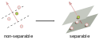
- Since softmax involves a smooth convex combination of tokens, the only way to get the one-hot vector corresponding to a single token is to have infinite norm: \[ \Vert \mathbf{W} \Vert_2 \to \infty. \] So \(\hat{\mathbf{W}}\) converges to \(\hat{\mathbf{W}}_2^*\) as the norms blow up.
- Analogously, for the \(\mathbf{K},\mathbf{Q}\) factorization we can minimize the sum \[ \frac{1}{2}\left(\Vert \mathbf{K}\Vert_2^2 + \Vert \mathbf{Q}\Vert_2^2\right), \] subject to the hard margin constraint. As it turns out, \[ \min \frac{1}{2}\left(\Vert \mathbf{K}\Vert_2^2 + \Vert \mathbf{Q}\Vert_2^2\right) = \min \Vert \mathbf{Q}\mathbf{K}^\top\Vert_1 = \min \Vert \mathbf{W}\Vert_1, \] where \(\Vert \cdot \Vert_1\) is the nuclear, trace, or Schatten 1-norm. In pictures:
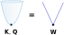
- This holds when we constrain \(\mathbf{Q}\), \(\mathbf{K}\), hence \(\mathbf{W}\) to have rank \(\leq m\). We formulate \[ \mathbf{W}^*_1 \in \mathcal{W}_m^*=\underset{\text{rank}(\mathbf{W})\leq m}{\text{argmin}} \Vert \mathbf{W} \Vert_1 \quad \text{such that} \quad z_i \mathbf{W}(x_{i\mathtt{opt}_i}-x_{it})^\top \geq 1. \tag{5} \label{1-SVM} \] In this case, there is a set of solutions \(\mathcal{W}_m^*\) due to the rank constraint.
- The rank constraint is nonconvex if \(m < d\). However, if the solution of \((\ref{1-SVM})\) has rank \(\leq m\), then it is recovered by solving the SVM with rank \(m\). Furthermore, the rank of solutions is bounded by the number of training points, since \[ \mathbf{W}^*_{1, 2} \in \mathtt{span}(z_i) \quad \Longrightarrow \quad \mathtt{rank}(\mathbf{W}^*_{1, 2}) \leq n. \] This arises from the usual expansion in training examples.
3.2 Connecting to the loss landscape
- So, now we have formulated these SVM problems. The hope is that training the transformer solves them!
- The first question is whether the loss function picks out the optimal tokens selected by the SVM. It's easy to see by convexity that, for any set of optimal indices \((\mathtt{opt}_i)_{i=1}^n\), the risk is lower bounded by their average loss: \[ \mathcal{L} = \frac{1}{n}\sum_{i=1}^n \ell(Y_i\cdot h(a_i)) \geq \frac{1}{n}\sum_{i=1}^n \ell(\gamma_{i \mathtt{opt}_i}) = \mathcal{L}^*. \] Suppose the SVM is feasible, with some separating \(\mathbf{W}_\mathtt{SVM}\). Then as \(R\) increases, the norm of \(\mathbf{W}_\mathtt{SVM}\) increases, so \[ \lim_{R\to \infty} \mathcal{L}(R\cdot \mathbf{W}_\mathtt{SVM}) = \mathcal{L}^*. \] We have a global minimum that lives "out at infinity".
- Of course, we want to know if our loss function can actually get there by GD! This is tricky, so we will warm up with a regularized path (RP) analysis. This "regularizes" the minimum of the loss function on a ball of increasing radius: \[ \mathbf{W}_R = \underset{\Vert \mathbf{W}\Vert_2 \leq R}{\text{argmin}} \, \mathcal{L}(\mathbf{W}) ,\qquad (\mathbf{K}_R, \mathbf{Q}_R) = \underset{\Vert \mathbf{Q}\Vert_2^2+\Vert \mathbf{K}\Vert_2^2 \leq 2R}{\text{argmin}}\mathcal{L}(\mathbf{K}, \mathbf{Q}). \tag{6} \label{RP} \] The idea is take \(R \to \infty\) and see where these RP minima go.
- Notice that, since we are not minimizing the \(\mathbf{K}, \mathbf{Q}\) norms, but the loss function \(\mathcal{L}(\mathbf{K},\mathbf{Q})\), we cannot simplify to the \(1\)-norm. Nevertheless, the factorized problem has an implicit \(1\)-norm bias! The \(\mathbf{W}\) formulation has a \(2\)-norm bias. Formally: \[ \lim_{R\to\infty}\frac{\mathbf{W}_R}{R} = \frac{\mathbf{W}^*_2}{\Vert \mathbf{W}^*_2\Vert_2}, \quad \lim_{R\to\infty}\mathtt{dist}\left(\frac{\mathbf{Q}_R \mathbf{K}^\top_R}{R}, \frac{\mathcal{W}^*_m}{\min \mathcal{L}(\mathcal{W}^*_m)}\right) = 0, \] where \(\mathtt{dist}\) is Euclidean distance from a point to a set.
4 Gradient descent
- So far, we've ignored how the weight matrix (or its factors) are trained. We focus on vanilla GD, and for learning rate \(\eta > 0\), \(k \in \mathbb{N}\), define \[ \mathbf{W}(k + 1) = \mathbf{W}(k) - \eta \nabla \mathcal{L}[\mathbf{W}(k)], \] with some initial \(\mathbf{W}(0) \in \mathbb{R}^{d\times d}\), and similarly for \(\mathbf{Q}, \mathbf{K}\).
4.1 Global convergence
- We start by enumerating some sufficient conditions for global convergence of GD.
- Suppose that the optimal token index
\(\mathtt{opt}_i\) is unique, and moreoever, non-optimal tokens \(t, t'
\neq \mathtt{opt}_i\) in each sequence are (B.1) support vectors,
\[ z_i\mathbf{W}^* (x_{i\mathtt{opt}_i} - x_{it})^\top = 1,
\]
and (B.2) have nearly equal scores, \(|\gamma_{it} - \gamma_{it'}| \leq
\delta\) for some dataset-dependent \(\delta\). Then you can show
global convergence! More formally, you can prove that:
- there are no local stationary points, i.e. no \(\mathbf{W}\) such that \(\nabla\mathcal{L}(\mathbf{W}) = 0\);
- assuming (B.1), if \(\eta\) is sufficiently small, the norm of \(\mathbf{W}(k)\) diverges: \[ \lim_{k\to\infty}\Vert \mathbf{W}(k)\Vert_2 = \infty, \] which we require for converge to a one-hot output vector; and
- assuming also (B.2), then GD directionally converges to the solution of \((\ref{2-SVM})\): \[ \lim_{k\to\infty}\frac{\mathbf{W}(k)}{\Vert\mathbf{W}(k)\Vert_2} = \hat{\mathbf{W}}^*_2. \]
- Let's examine these assumptions. (B.1) should generically result from overparametrization, since as \(d\) increases, there is enough hyperdimensional wiggle room to pass a plane through each non-optimal token:
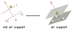
- The authors conjecture that \(d \gtrsim (T+n)\log(T+n)\) is enough, and provide some numerical evidence. Green bars indicate the proportion of \(500\) cases in which (B.1) is satisfied for random data:
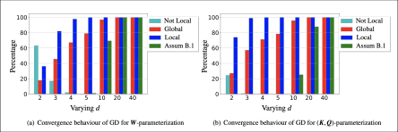
- Assumption (B.2), in contrast, is non-generic, since even as \(d\) increases, the SVM objective does not drive non-optimal tokens to have similar scores. But if (B.2) fails, local minima can come into being which trap GD, as I'll discuss shortly.
- Nonetheless, with a good initialization we can avoid these bad minima. Define \[ \mathcal{C}_{\mu, R} = \{\mathbf{W} : \Vert \mathbf{W}\Vert_2 \geq R,\,\, z_i\mathbf{W}^* (x_{i\mathtt{opt}_i} - x_{it})^\top \geq \mu \text{ for all } t \neq \mathtt{opt}_i\}. \] These are weight matrices outside a ball of radius \(R\) that separate optimal from non-optimal tokens with margin \(\mu\). You can show that for any \(\mu > 0\), for sufficiently large \(R\) this set has no local stationary points.
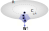
- Moreover, if GD arrives there, and updates keep it there, then it converges: \[ \lim_{k\to\infty}\frac{\mathbf{W}(k)}{\Vert\mathbf{W}(k)\Vert_2} = \hat{\mathbf{W}}^*_2. \] This is nice and all, but it raises the thorny question of what local minima look like and how to avoid them. This is what we turn to next!
4.2 Local convergence
- Since the weight matrix heads off infinity under mild conditions, we need to worry about locally optimal directions. Let's define these now.
- Consider a set of suboptimal indices \(\boldsymbol{\alpha} = (\alpha_i)^n_{i=1}\), one for each data point. Suppose that \((\ref{2-SVM})\) is feasible with \(\boldsymbol{\alpha}\) replacing \(\mathtt{opt}\), with minimum \(2\)-norm solution \(\mathbf{W}^{\boldsymbol{\alpha}}_2\). For each \(i\), let \(\mathcal{T}_i \subseteq [T]\) denote the set of support indices satisfying \[ z_i\mathbf{W}^* (x_{i\alpha_i} - x_{it})^\top = 1. \] If the \(\alpha_i\) have better scores than the support indices, \(\gamma_{i\alpha_i} > \gamma_{it}\), then \(\mathbf{W}^{\boldsymbol{\alpha}}_2\) is a locally optimal direction. GD only "looks at" scores of support indices!
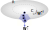
- We saw above that with a good initialization, GD can end in the global minimum. The same proof shows that, with a bad initialization, it ends in a local minimum! The construction involves an analogous set \(\mathcal{C}_{\mu, R}(\mathbf{W}^{\boldsymbol{\alpha}}_2)\): \[ \mathcal{C}_{\mu, R}(\mathbf{W}^{\boldsymbol{\alpha}}_2) = \{\mathbf{W} : \Vert \mathbf{W}\Vert_2 \geq R, \,\, \mbox{Tr}[\hat{\mathbf{W}}^\top\hat{\mathbf{W}}^{\boldsymbol{\alpha}}_2] \geq 1-\mu\}. \]
- We can see this convergence numerically. Below are the correlation coefficients for the GD weights and locally optimal solution, when appropriately initialized. We see the expected \(2\)-norm and \(1\)-norm bias:
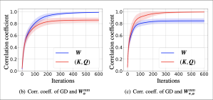
- So, is there a way to ensure the absence of local minima, other than the (unrealistic) assumption of nearly equal scores? There is! We simply find ways to prevent any \(\boldsymbol{\alpha}\) from giving a locally optimal direction.
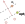
- Recall that we need \(\alpha_i\) to have a better score than its support indices, for all \(i\). However, \(\alpha_i\) never has a better score than \(\mathtt{opt}_i\). So we simply require \(\mathtt{opt}_i\) to be support for some \(i\). This lets GD "sense" the suboptimality.
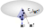
- This condition is hard to check due to the combinatorial explosion of \(\boldsymbol{\alpha}\). But there is a stronger hypothesis: the optimal indices are support for every \(i\). This would be much easier to check for a given probabilistic model of data!
5 Multi-token composition*
- We've covered the main result: a single-layer transformer with linear prediction head can be characterized in terms of SVM max-margin problems for selecting optimally attended-to tokens. When non-optimal tokens are support for optimal tokens, and vice versa, then GD converges to the global minimum.
5.1 A nonlinear expansion
- The authors note that, realistically, for multiple layers or
nonconvex heads \(h(\cdot)\), attention will select multiple
tokens per sequence. This raises the question:
- What is the implicit bias and the form of \(\mathbf{W}(k)\) when the GD solution is composed by multiple tokens?
- By "multiple tokens", we mean some but not all; since this has zero entries, it implies that \(\Vert \mathbf{W}(k)\Vert \to \infty\). Provide the convergence is not pathological, the authors expect expect the GD solution can be written \[ \mathbf{W}(k) = \Vert \mathbf{W}(k) \Vert \cdot \hat{\mathbf{W}}^* + \mathbf{W}^\text{fin} + o(k), \tag{7} \label{decomp} \] where \(\hat{\mathbf{W}}^*\) is the direction of convergence, and \(\mathbf{W}^\text{fin}\) is a finite matrix.
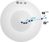
- They don't explain their intuition, but this is basically a Laurent expansion at infinity. If \(x = 1/k\), we schematically expect something like \[ \mathbf{W}(x) = f\left(\frac{1}{x}\right)\mathbf{W}^* + \mathbf{W}^\text{fin} + o(x), \] where \(f = O(1/x)\). If \(\mathbf{W}\) blows up polynomially in \(k\), then for some power \(m\), \[ \lim_{x\to 0} x^{m} \mathbf{W}(x) =\lim_{k\to \infty} \frac{1}{k^{m}} \mathbf{W}(k) = \Vert \mathbf{W}^* \Vert \hat{\mathbf{W}}^*, \] We'll see another way to view the decomposition in a moment, but it would be cool to explore this expansion at infinity!
5.2 The general SVM
- We will try to formulate a corresponding SVM problem. Consider the final softmax probability distribution \[ s_i^* = \mathtt{S}(z\mathbf{W}^* \mathbf{X}^\top) \] with selected entries \(s_{it}^* > 0\) for \(t \in \mathcal{O}_i \subseteq [T]\), and masked entries \(s_{it}^* = 0\) for \(t \in \bar{\mathcal{O}}_i\).
- The decomposition of \(\mathbf{W}(k)\) has a simple interepretation: the directional part selects/masks tokens, and the finite component assigns probabilities. Concretely, \[ s_{it}^* = Ce^{z_i \mathbf{W}^{*}x_{it}^{\top}} e = C e^{z_i \mathbf{W}^{\text{fin}}x_{it}^{\top}}e^{\Vert\mathbf{W}^*\Vert z_i \hat{\mathbf{W}}^*x_{it}^{\top}}. \] The second factor either goes to zero or blows up, depending on the sign of \(z_i \hat{\mathbf{W}}^*x_{it}^{\top}\), which achieves the masking or selection.
- If \(t, t' \in \mathcal{O}_i\) are both selected, it's natural to take their infinite parts to be equal, \[ e^{\Vert\mathbf{W}\Vert z_i \hat{\mathbf{W}}x_{it}^{\top}} = e^{\Vert\mathbf{W}\Vert z_i \hat{\mathbf{W}}^*x_{it'}^{\top}} \quad \Longrightarrow \quad z_i \hat{\mathbf{W}}^*(x_{it}- x_{it'})^{\top} = 0. \] This implies that the finite part obeys \[ \frac{e^{z_i \mathbf{W}^{\text{fin}}x_{it}^{\top}}}{e^{z_i \mathbf{W}^{\text{fin}}x_{it'}^{\top}}} = \frac{s_{it}^*}{s_{it'}^*} \quad \Longrightarrow \quad z_i \mathbf{W}^{\text{fin}}(x_{it} - x_{it'})^{\top} = \log\left(\frac{s_{it}^*}{s_{it'}^*}\right). \]
- Finally, if \(t \in \mathcal{O}_i\) is selected and \(t'' \in \bar{\mathcal{O}_i}\) is masked, then the ratio should diverge, with the directional component dominating: \[ \frac{s^*_{it}}{s^*_{it''}} \sim \frac{e^{\Vert \mathbf{W}\Vert z_i \hat{\mathbf{W}}^{*}x_{it}^{\top}}}{e^{\Vert \mathbf{W}\Vert z_i \hat{\mathbf{W}}^{*}x_{it''}^{\top}}} = e^{\Vert \mathbf{W}\Vert z_i \hat{\mathbf{W}}^{*}(x_{it} - x_{it''})^{\top}} \to \infty. \] This suggests a max-margin constraint of the form \(z_i \hat{\mathbf{W}}^{*}(x_{it} - x_{it''})^{\top} \geq 1\).
- Thus, we have an SVM problem that corresponds to multi-token composition:
- \(\mathbf{W}^*_\Diamond = \text{argmin}_{\mathbf{W}} \Vert \mathbf{W}\Vert_\Diamond\), for a norm \(\Diamond\), such that:
- \(z_i \mathbf{W}_\Diamond^*(x_{it}-x_{it'})^\top =0, \quad \text{ for all }t, t' \in\mathcal{O}_i\);
- \(z_i \mathbf{W}_\Diamond^*(x_{it}-x_{it''})^\top \geq 1, \quad \text{ for all }t \in\mathcal{O}_i, t'' \in\bar{\mathcal{O}}_i\).
- They don't prove much about this formulation, partly because it seems to be subject of an upcoming paper. But they do some nice numerical experiments with a nonconvex (\(\mathtt{ReLU}\)) head and random data:
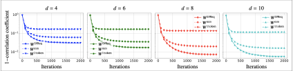
- The plots show the correlation coefficient for three baselines. The first two are SVM problems, namely the single token problem \((\ref{2-SVM})\), and the solution of the multi-token SVM with \(2\)-norm penalty. Unsurprisingly, the latter does better.
- However, better than either of these is an analytical solution based on \((\ref{decomp})\), which calculates the finite part \(\mathbf{W}^{\text{fin}}\) from softmax probabilities, then tunes the coefficient \(\gamma\) of the direction in \[ \mathbf{W}^\text{fin} + \gamma \hat{\mathbf{W}}^* \] to maximize correlation with the GD solution.
- This suggests that nonlinear attention is not best viewed as an SVM, but rather, in terms of its effective dynamics at infinity. Sounds like a cool physics problem!
6 Some quantum homework
- Does any of this bear on QML? In the linear setting, where attention can be provably related to an SVM, it feels highly relevant!
- This leads to our first homework question:
- Can we (naturally) embed linear attention in a quantum model?
- The paper also answers a question I considered a few weeks back, regarding sparsity. In the linear case, only one token is chosen per input sequence. We may be able to sparsify training by, e.g. computing a single term in the loss function, and then use Grover to find this term quickly.
- This leads to the second question:
- Can we sparsify training in such a way that Grover applies?
- The last question is not really quantum, but it is physics:
- For nonlinear attention, what determines the effective dynamics of GD at infinity?
7 References
- "Transformers as Support Vector Machines" (2018). Davoud Ataee Tarzanagh, Yingcong Li, Christos Thrampoulidis, Samet Oymak.